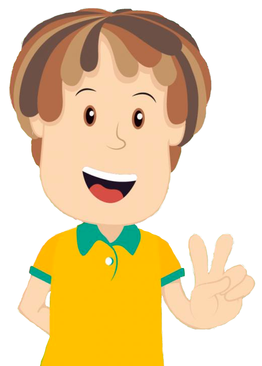
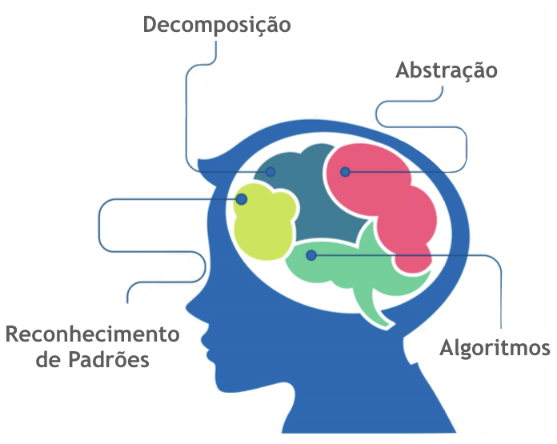

Por que aprender Pensamento Computacional?
Estudem!
Então, por que aprender Pensamento Computacional? Porque o Pensamento Computacional estimula a construção do pensamento lógico. Ajuda a resolver sozinho os problemas por meio da racionalidade. Também pode ser definido como uma estratégia usada para desenhar soluções e solucionar problemas de maneira eficaz tendo a tecnologia como base.
O Pensamento Computacional se resume em 4 pilares que são:
- 1.Decomposição: dividir um problema complexo em pequenas partes, a fim de solucioná-las com mais facilidade;
- 2.Reconhecimento de padrões: como a própria expressão define, ajuda na identificação de aspectos comuns nos processos;
- 3.Abstração: analisa elementos que têm relevância, diferenciando-os daqueles que podem ser deixados de lado;
- 4.Algoritmos: reúne todos os pilares já citados e envolve a criação de um grupo de regras para a solução de problemas.
A ideia é reformular problemas que aparentam ser de difícil resolução e transformá-los em algo capaz de ser compreendido, a fim de lidar com as incertezas que muitas vezes o cercam.
Quais as habilidades que podem ser desenvolvidas pelo Pensamento Computacional?
Uma série de competências é adquirida do processo de desenvolvimento do Pensamento Computacional. As habilidades refletem diretamente sobre o aprendiza do indíviduo. Principalmente no caso das crianças, o uso dessa metodologia ajuda em seu crescimento, melhorando aspectos como o desenvolvimento cognitivo.
Construção do pensamento lógico
A construção do pensamento lógico é uma das habilidades principais que podem ser desenvolvidas por meio do Pensamento Computacional. Nas crianças podem começar ainda nas primeiras fases, quando aprendem que existem padrões que definem certas ações. Assim elas começam a solucionar questões de maneira mais lógica, sempre focando em um pensamento mais racional para determinar as respostas dadas a diferentes atividades do dia a dia.
Autonomia
A Abstração e Algoritmo são duas bases do Pensamento Computacional, elas abrem espaço para uma atividade importante que é a autonomia das crianças. Fazendo com que elas deixem de apenas consumir as tecnologias criadas e produzidas e passar a ser produtoras de recursos digitais.
Isso as prepara para o mundo em que diferentes tecnologias aparecem diariamente. Para que seja desenvolvido de fato, é preciso maior aperfeiçoamento por meio de incentivos a certas determinadas atividades.

Tutoriais
Alguns jogos simples podem ser feitos facilmente usando o JavaScript. No conteúdo a seguir iremos ensinar como fazer alguns desses jogos simples para ajudar o estudo do Pensamento Computacional. Para começar, vamos fazer o clássico Ping-Pong feito no java script, também pode ser feito um outro clássico que é o joguinho da cobrinha no HTML e Css3 e para finalizar, como fazer um site simples usando também o HTML e o CSS3. Confira abaixo:
Ping-Pong: O Ping-Pong, um jogo clássico e extremamente simples, bem simples e facíl de fazer no JavaScript.
Snake Game: O clássico jogo da cobrinha, muito presente nos celulares antigos, um jogo que pode ser feito a partir do HTML e do CSS3.
Site: Como fazer um simples site, uma página simples com informações que você queira transmitir para o navegador também usando o HTML e o CSS3.